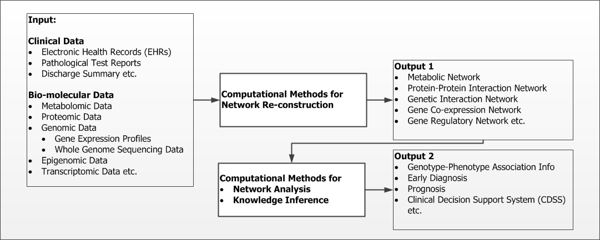
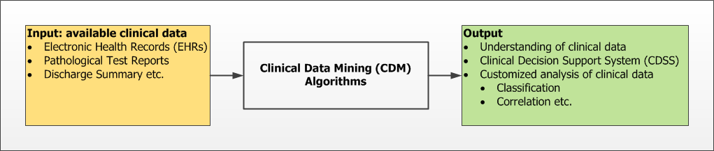

Research Motivation
Computational Systems Biology (CSB)
Non-communicable diseases (NCDs) are the leading cause of death (approximately 68% of all deaths in 2012) worldwide (http://www.who.int/gho/ncd/mortality_morbidity/ncd_total/en/). NCDs are generally complex, progresses slowly and are of relatively longer duration as compared to other diseases. Complexity of disease originates from the involvement of multiple factors (genetic, molecular to environmental) and their intertwined interactions. The intertwined interactions often lead to multi-morbidities representing a collection of clinical conditions and thus it may hinder the diagnosis of actual complex disease or index disease. For example, lung cancer is associated with multiple co-morbidities including chronic obstructive pulmonary disease (COPD) and mortality is heavily dependent on co-morbidities.
With regards to above discussion, we want to look at a set of specific questions with the motivation of better diagnostic models, reduction of financial burden and shorter treatment plans:
- can we have data driven and possibly disease-independent models for early detection
- can we predict co-morbidities and their timeline, and
- based on the above, can we possibly suggest optimal planning for therapeutic interventions?
Prediction, early diagnosis, and therapeutic intervention planning require deep insight into the development, progression, and biochemical nature of the disease. We aim to gain this insight by analysing diverse and complementary data obtained at both genotypic and phenotypic level. We need to look at broad spectrum of sub-problems here: modeling the molecular interactions [Network Reconstruction Problem: ML, Statistical Modeling, Differential Eq, Linear Algebra, Optimization], analysing organizational characteristics: static and dynamic [Network Analysis: Complex Networks, Graph Theory, ML, Statistics, Linear Algebra, Optimization] and establishing link between models and biology [Knowledge Inference: Data Analysis and validation].
Keywords: Network reconstruction, ML, Complex Networks, Social Network Analysis, Disease Progression Modeling, DPM
Clinical Data Mining (CDM)
Realizing the tremendous potential of Electronic Medical Record (EMR) in transforming healthcare system to improve patient care, EMR is being widely adopted worldwide. Electronic medical records (EMRs) contain clinical information accumulated during patients' treatment in the form of bedside monitor trends, clinical tests, laboratory reports, inpatient and outpatient notes, and discharge summaries. Text narratives in such clinical notes contain a lot of information. Information extracted from such data could prove very useful in faster decision making, in reducing cost both for patient as well as for providers and in improving overall healthcare systems. The full potential of these data can only be realized if all information stored in these text data can be extracted efficiently and meaningfully integrated with other data using state-of-the-art machine learning and natural language processing (NLP) methods.
Most of the currently used methods depend a lot on handcrafted features and domain knowledge and thus restricts experts in ML and NLP to actually work in this domain. At this stage, our primary aim is to avoid domain-dependency to maximum possible extent. To achieve this objective, our group is exploring the recent advances in Deep Learning and its applications in NLP problems.
Keywords: Clinical Data Mining, Deep Learning and NLP, Concept Extraction, Named Entity Recognition, Word Vectors, Word Embedding, Relation Extraction, Event Detection, Semantic Role Labeling, Clinical decision support system, Convolution Neural Network, Recurrent Neural Network, Representation Learning
Machine Learning (ML), NLP and Complex Networks
These two interests also allow us to look at several generic problems, which can occur in other application domains (e.g. social network analysis, text analytics etc.) also, in Machine Learning, NLP, and Complex Networks.
- Case Study 1: Detection of highly overlapping communities in complex networks - Our interest lies in identifying protein complexes in protein-protein interaction networks. However, overlapping communities is found in other networks such as social networks apart from biological networks. Thus the developed algorithm is not limited only to the PPI network.
- Case Study 2: Inferring High Confidence Protein-Protein Interactions - Protein-protein interactions are generally inferred from different high-throughput experiments which are quite noisy. Thus interpreted interactions stored in several databases, contain lots of false-negative and false-positive. In our study, we exploited
Learning to Rank
idea, which is extensively used in information extraction systems such as search engines. This work illustrates how ML algorithm designed for generic problem, can also be applied in computational biology domain.